INEP
Educação
A educação como direito fundamental, vai além da transmissão de conhecimento, ela também contribui para a formação cidadã1, desta maneira é de interesse, de qualquer país democrático, o seu desenvolvimento. Com isso em vista, no Brasil, criou-se o Plano de Nacional de Educação (PNE), o qual tem como objetivo traçar diretrizes e metas para a educação em nosso país (em um período de 10 anos).
No PNE de 2011-20202, umas de suas metas era o aumento do Índice de Desenvolvimento da Educação Básica (Ideb)3, em que um do seus indicadores é o Censo Escolar realizado pelo Inep. Sendo assim, esse projeto tem como objetivo realizar uma análise exploratória do bando de dados do Inep4 nos períodos de 2007 a 2020.
2007 - 2020
Buscou-se analisar como as taxas de aprovação, reprovação e abandono variaram durante o período de 2007 a 2020.
library(basededados)
library(tidyverse)
library(ggplot2)
library(showtext)
# Defina o seu projeto no Google Cloud
set_billing_id("inep-366902")
# Para carregar os dados direto no R
query <- bdplyr("br_inep_indicadores_educacionais.escola")
df <- bd_collect(query)
ipea <- select(df, id_escola, id_municipio ,ano, rede, taxa_aprovacao_ef, taxa_aprovacao_em,
taxa_reprovacao_ef, taxa_reprovacao_em,
taxa_abandono_ef, taxa_abandono_em, had_em, had_ef)
write_csv(x = ipea, path ="~/Projeto Ipea/ProjIpea/dados/ipea.csv")
write_csv(x = df, path ="~/Projeto Ipea/ProjIpea/dados/ipea_completo.csv")
ipea <- read.csv(file = "~/Projeto Ipea/ProjIpea/dados/ipea.csv")
medias <- ipea %>%
group_by(ano, rede) %>%
summarise(
media_aprov_ef = mean(taxa_aprovacao_ef, na.rm = TRUE),
media_aprov_em = mean(taxa_aprovacao_em, na.rm = TRUE),
media_reprov_ef = mean(taxa_reprovacao_ef, na.rm = TRUE),
media_reprov_em = mean(taxa_reprovacao_em, na.rm = TRUE),
media_abad_ef = mean(taxa_abandono_ef, na.rm = TRUE),
media_abad_em = mean(taxa_abandono_em, na.rm = TRUE),
media_aulas_dir_ef = mean(had_ef, na.rm = TRUE),
media_aulas_dir_em = mean(had_em, na.rm = TRUE)
)Conforme os gráficos, podemos inferir que ao longo dos anos, tanto no Ensino Fundamental quanto no Médio, as taxas de aprovação aumentaram, de reprovação e de abandono diminuíram de abandono forma geral. E destaca-se os que mais apresentaram maior variação foram as redes escolares: estadual e municipal. Buscando entender o motivo das variações nas taxas, verificou-se a média diária de aulas tem alguma relação.
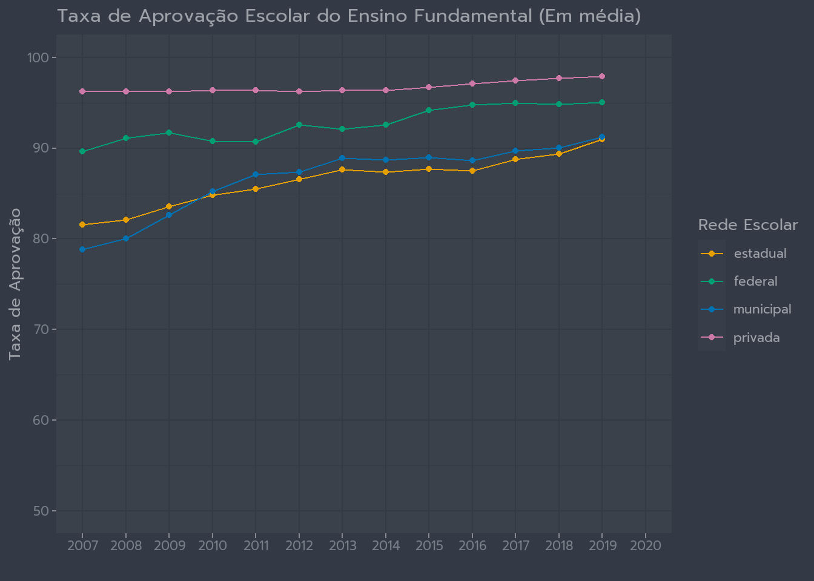 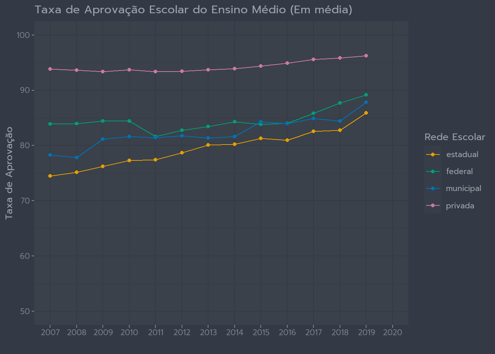
a_ef <- medias |>
ggplot(aes(x=factor(ano),y = media_aprov_ef, colour = rede, group = rede)) +
geom_line() +
geom_point() +
labs(colour = "Rede Escolar") +
xlab("") +
ylab("Taxa de Aprovação") +
ylim(50,100) +
ggtitle("Taxa de Aprovação Escolar do Ensino Fundamental (Em média)")
a_em <- medias |>
ggplot(aes(x=factor(ano),y = media_aprov_em, colour = rede, group = rede)) +
geom_line() +
geom_point() +
labs(colour = "Rede Escolar") +
xlab("") +
ylab("Taxa de Aprovação") +
ylim(50,100) +
ggtitle("Taxa de Aprovação Escolar do Ensino Médio (Em média)")
a_ef
a_em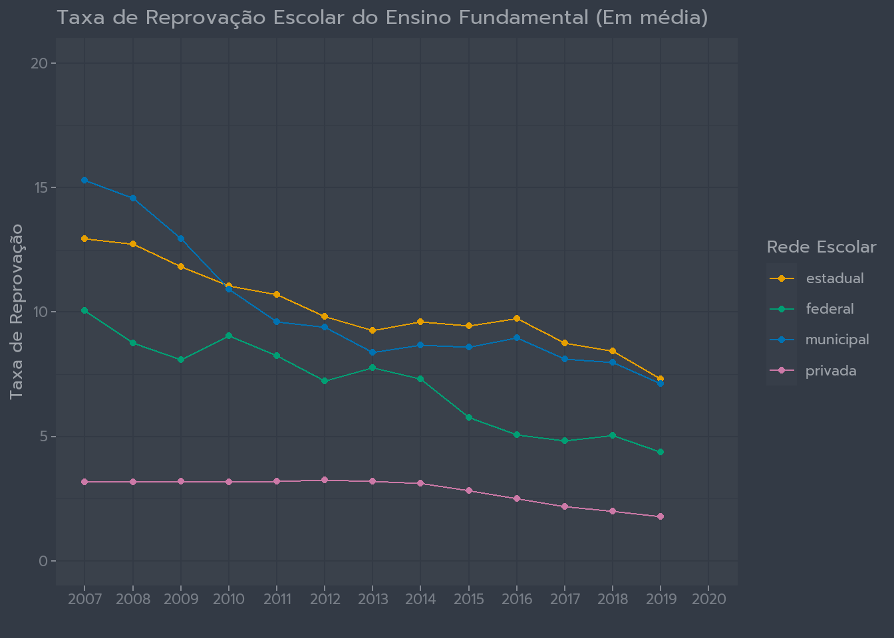 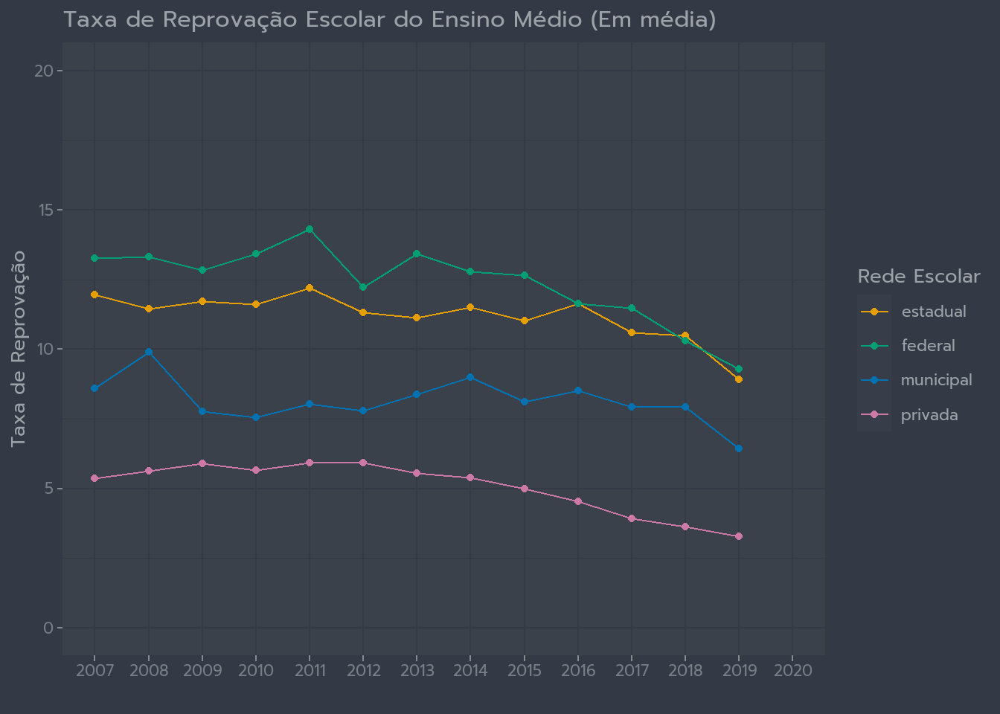
r_ef <- medias %>%
ggplot(aes(x=factor(ano),y = media_reprov_ef, colour = rede, group = rede)) +
geom_line() +
geom_point() +
labs(colour = "Rede Escolar") +
xlab("") +
ylab("Taxa de Reprovação") +
ylim(0,20) +
ggtitle("Taxa de Reprovação Escolar do Ensino Fundamental (Em média)")
r_em <- medias %>%
ggplot(aes(x=factor(ano),y = media_reprov_em, colour = rede, group = rede)) +
geom_line() +
geom_point() +
labs(colour = "Rede Escolar") +
xlab("") +
ylab("Taxa de Reprovação") +
ylim(0,20) +
ggtitle("Taxa de Reprovação Escolar do Ensino Médio (Em média)")
r_ef
r_em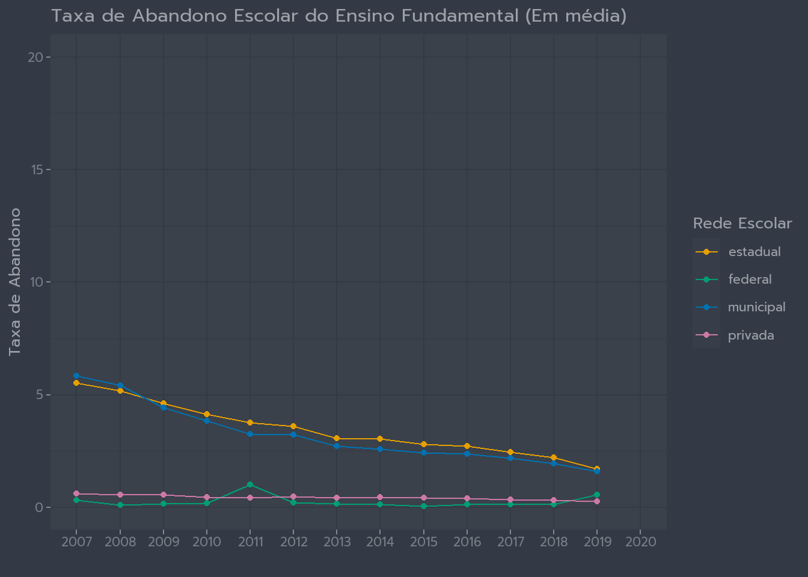 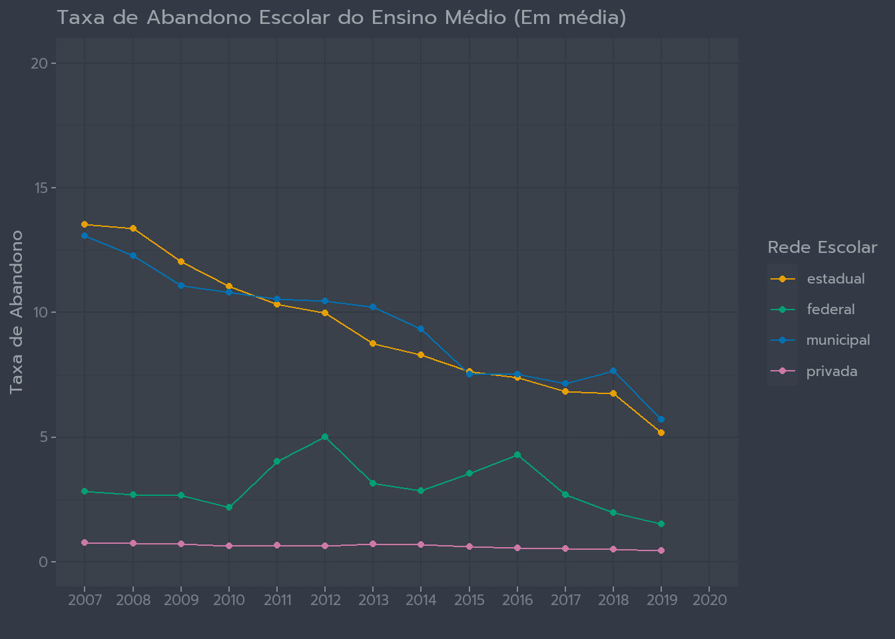
ab_ef <- medias %>%
ggplot(aes(x=factor(ano),y = media_abad_ef, colour = rede, group = rede)) +
geom_line() +
geom_point() +
labs(colour = "Rede Escolar") +
xlab("") +
ylab("Taxa de Abandono") +
ylim(0,20) +
ggtitle("Taxa de Abandono Escolar do Ensino Fundamental (Em média)")
ab_em <- medias %>%
ggplot(aes(x=factor(ano),y = media_abad_em, colour = rede, group = rede)) +
geom_line() +
geom_point() +
labs(colour = "Rede Escolar") +
xlab("") +
ylab("Taxa de Abandono") +
ylim(0,20) +
ggtitle("Taxa de Abandono Escolar do Ensino Médio (Em média)")
ab_ef
ab_emMédia de aulas diárias
Conforme os gráficos, podemos dizer que no Ensino Fundamental quanto mais horas/aula maior sua taxa de aprovação, mas não necessariamente é cumulativo, a partir de 4 a 5 horas, essa taxa parece chegar em um platô e ter um efeito negativo. Destaque as rede federais, que ao longo dos anos se aproximou das redes privadas mas que em função das horas/aulas também apresentam uma tendência reprovar e abandonar os estudos.
Contudo, no Ensino Médio, esse padrão é mais regular, indicando que quanto mais horas/aula maior a tendência de aprovação, menor a tendência de reprovação e abandono escolar. Vale lembrar que no ensino público, existe uma carência de profissionais, o que pode explicar o porque as redes Estadual e Municipal, apresentarem um média de horas/aula abaixo da Federal e Privada.
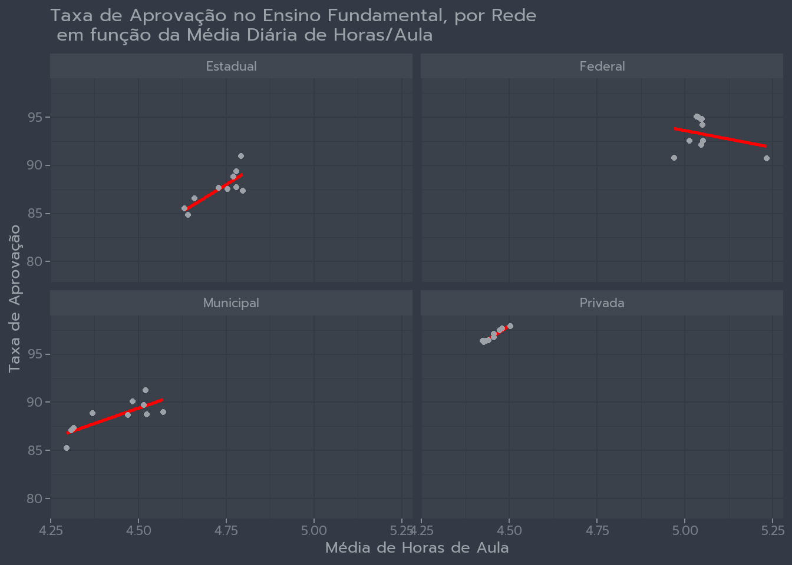 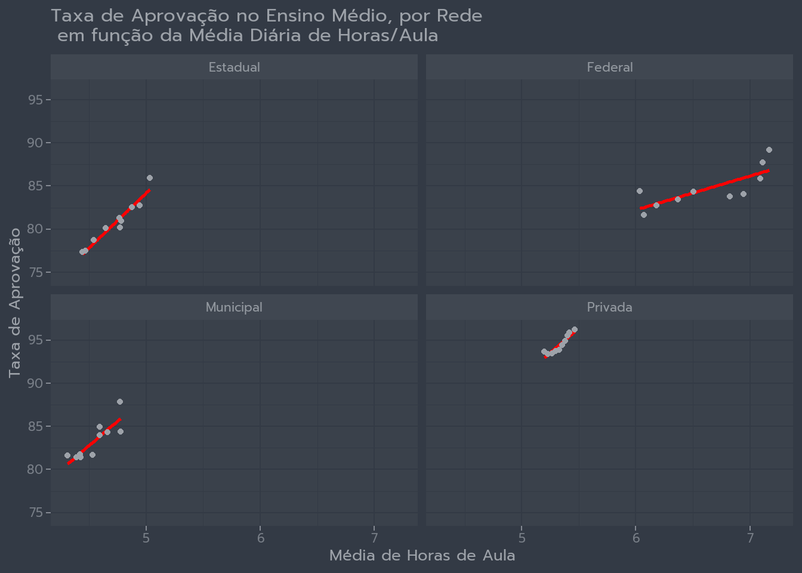
ef_ap_medias_aulas <- medias %>%
mutate(rede = str_to_title(rede)) %>%
ggplot(aes(media_aulas_dir_ef, media_aprov_ef)) +
geom_smooth(method = "lm", se = FALSE, color = "red") +
geom_point() +
facet_wrap(~rede)+
labs(x = "Média de Horas de Aula",
y = "Taxa de Aprovação ",
title = "Taxa de Aprovação no Ensino Fundamental, por Rede \n em função da Média Diária de Horas/Aula"
)
em_ap_medias_aulas <- medias %>%
mutate(rede = str_to_title(rede)) %>%
ggplot(aes(media_aulas_dir_em, media_aprov_em)) +
geom_smooth(method = "lm", se = FALSE, color = "red") +
geom_point() +
facet_wrap(~rede)+
labs(x = "Média de Horas de Aula",
y = "Taxa de Aprovação ",
title = "Taxa de Aprovação no Ensino Médio, por Rede \n em função da Média Diária de Horas/Aula"
)
ef_ap_medias_aulas
em_ap_medias_aulas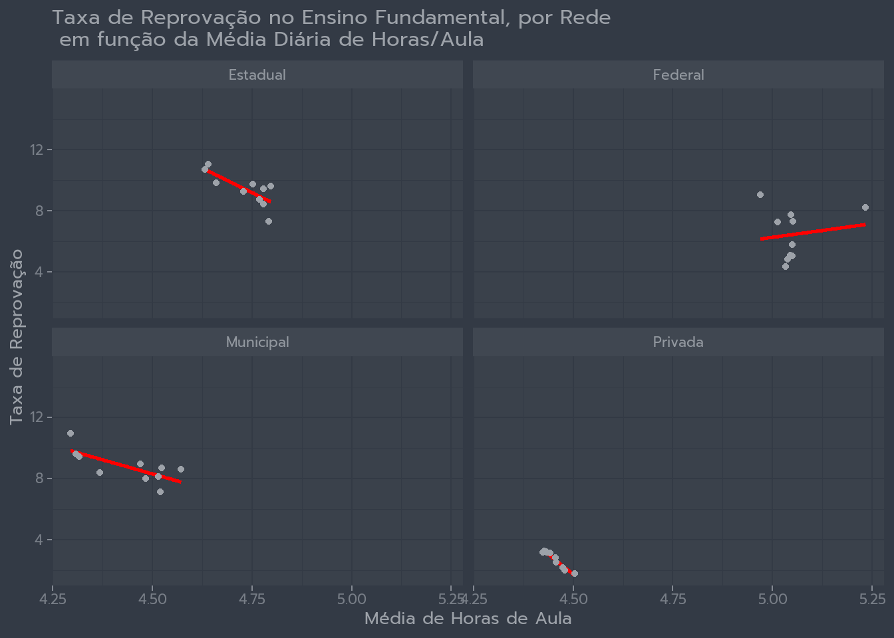 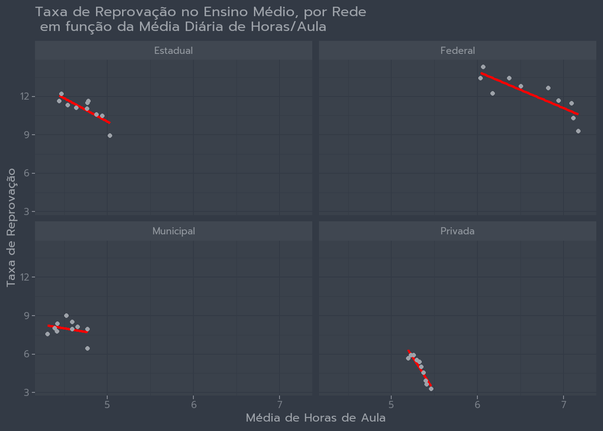
ef_rp_medias_aulas <- medias %>%
mutate(rede = str_to_title(rede)) %>%
ggplot(aes(media_aulas_dir_ef, media_reprov_ef)) +
geom_smooth(method = "lm", se = FALSE, color = "red") +
geom_point() +
facet_wrap(~rede)+
labs(x = "Média de Horas de Aula",
y = "Taxa de Reprovação ",
title = "Taxa de Reprovação no Ensino Fundamental, por Rede \n em função da Média Diária de Horas/Aula"
)
em_rp_medias_aulas <- medias %>%
mutate(rede = str_to_title(rede)) %>%
ggplot(aes(media_aulas_dir_em, media_reprov_em)) +
geom_smooth(method = "lm", se = FALSE, color = "red") +
geom_point() +
facet_wrap(~rede)+
labs(x = "Média de Horas de Aula",
y = "Taxa de Reprovação ",
title = "Taxa de Reprovação no Ensino Médio, por Rede \n em função da Média Diária de Horas/Aula"
)
ef_rp_medias_aulas
em_rp_medias_aulas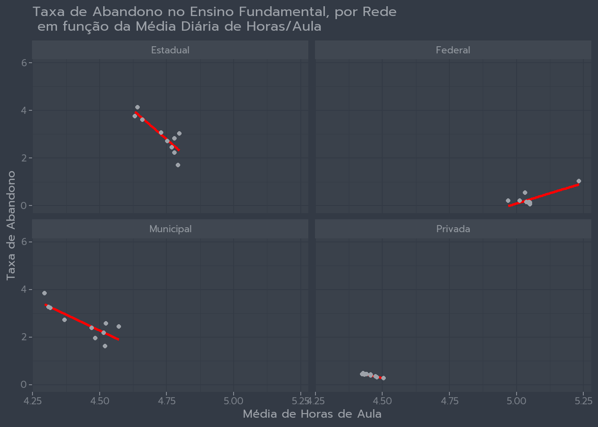 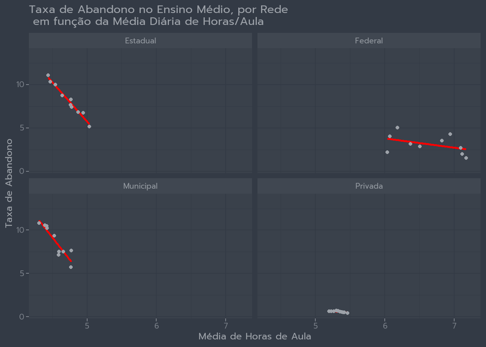
ef_ab_medias_aulas <- medias %>%
mutate(rede = str_to_title(rede)) %>%
ggplot(aes(media_aulas_dir_ef, media_abad_ef)) +
geom_smooth(method = "lm", se = FALSE, color = "red") +
geom_point() +
facet_wrap(~rede)+
labs(x = "Média de Horas de Aula",
y = "Taxa de Abandono ",
title = "Taxa de Abandono no Ensino Fundamental, por Rede \n em função da Média Diária de Horas/Aula"
)
em_ab_medias_aulas <- medias %>%
mutate(rede = str_to_title(rede)) %>%
ggplot(aes(media_aulas_dir_em, media_abad_em)) +
geom_smooth(method = "lm", se = FALSE, color = "red") +
geom_point() +
facet_wrap(~rede)+
labs(x = "Média de Horas de Aula",
y = "Taxa de Abandono ",
title = "Taxa de Abandono no Ensino Médio, por Rede \n em função da Média Diária de Horas/Aula"
)
ef_ab_medias_aulas
em_ab_medias_aulasConsiderações
Apesar de sua importância a educação é um dos direitos mais difíceis de se ter e manter, diversos são os fatores que impedem os indivíduos de exercê-lo, desde acesso a necessidades básicas até transporte e permanência dos docentes. Outro ponto é que quanto maior a média diária de horas/aula não necessariamente aumenta sua taxa de aprovação, ela aumenta mas parece que existem outros fatores e recursos envolvidos nessa relação, como qualidade, estudos extra curriculares ou você trabalhar e estudar, que não foram levados em consideração nesta análise. Contudo, essa análise breve, aponta que o PNE está conseguindo manter sua meta, como também, que apesar das trocas de governos a taxa de aprovação em nível escolar continua aumentando
Notas de rodapé
https://brasil.un.org/pt-br/81970-artigo-26-direito-educacao↩︎
https://pne.mec.gov.br/18-planos-subnacionais-de-educacao/543-plano-nacional-de-educacao-lei-n-13-005-2014↩︎
https://www.gov.br/inep/pt-br/areas-de-atuacao/pesquisas-estatisticas-e-indicadores/ideb↩︎
https://basedosdados.org/dataset/br-inep-indicadores-educacionais?bdm_table=escola↩︎